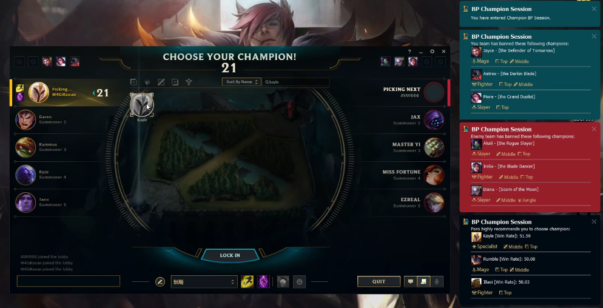
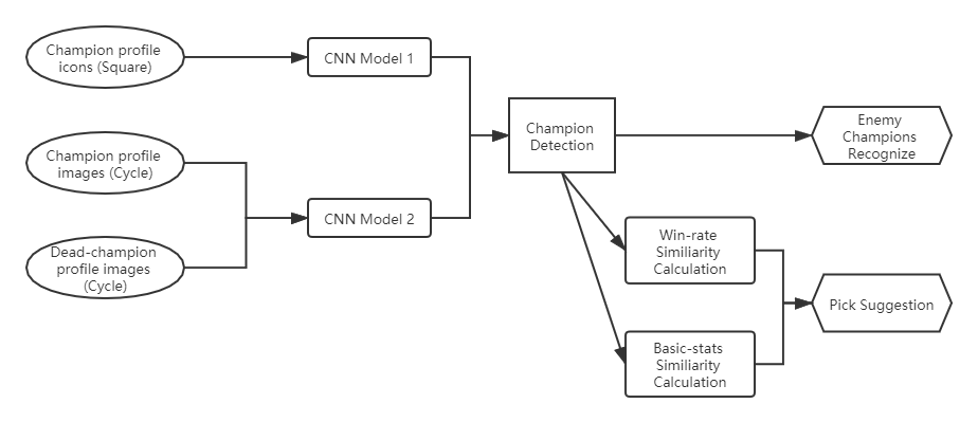

Technical Paper of League of Legends Assistant Tool
1. Introduction:
1.1 Purpose
The purpose of our project is to create a toolbox for League of Legends players to improve their skills in rank games. It won’t be a guidance tool or some introduction of this game, the target audience of our tool will be those players who want to win more in ranks but have no time to watch pro videos and study the counter picks or item builds.
Most of our teammates play this game, so we can build our tool using both machine learning and our own game understanding, this could help us handle the problems might appear in our ML models, or even design our own model to handle the data we collected.
1.2 Game Background
League of Legends is a team-based strategy game where two teams of five powerful champions face off to destroy the other’s base. Choose from over 140 champions to make epic plays, secure kills, and take down towers as you battle your way to victory. [1]
League of Legends (LoL) is a multiplayer online battle arena video game developed and published by Riot Games for Microsoft Windows and macOS. Inspired by the Warcraft III: The Frozen Throne mod Defense of the Ancients, the game follows a freemium model and is supported by microtransactions. [2]
1.3 Project Scope
Our project is a LOL overlay toolbox, we are going to have 2 main functions:
The first one is about champion ban/pick, we will give advice based on the enemy team's champion bans and help our users get champions they are afraid of.
The second function will be an in-game item build guide, we will detect the enemy team's build and your champion select, give advice on your next build.
The last one is a mini-map warning system, we detect enemy’s movement and send warnings if we believe you are in danger.
2.Prior Research Related to League of Legends:
2.1 League AI
League AI is a machine learning project based on the champion movement and attack. It was created by Oleffa, who was a PhD student, in 2017, and updated in 2019. This project is an implementation of a robot player using Vayne (a champion in the game) to attack minions and move, he chose PyTorch and YOLOv3 as his main tools to build this AI player, trained it and let it play as a human. The old version was written using TensorFlow, but no longer update now.[3]
We can use this project as a guide of monitoring the game interface, as we are going to use the images in game to detect objects, his project can be really helpful for us.
2.2 PyQt Examples
A GitHub tutorial about how to use PyQt5 and many examples for testing. [4] We learn about how to use PyQt to write our user interface based on a desktop pet project.
2.3 Poro Images and a Miku Desktop Pet
We fund a Miku (a Japanese cartoon character) desktop pet written in python, and we find some Poro (a pet in LOL game) images, our interface build is by modifying the desktop pet app, change the images of Miku to Poro, then rebuild the buttons and functions we need.
2.4 LoL Minimap Scanner
This is a project on CSDN.net, it is able to recognize champion avatar on the minimap. This project use OpenCV and trained their model by TensorFlow platform, CNN model. [5] This is really similar to what we want to do, we want to be able to recognize champion both in game and during selection process, so this could be a super fit guide for us.
2.5 LoL API
The official tool from Riot Game Company, help developers begin developing their own tools and products for the League of Legends player community. [6] We can get our images and basic champion stats from here, also, some of the API can get pro games data, which may be very helpful when we start training our model. The Tournament API enable us to create custom game and doing tests in those private rooms, basically this is the platform we will use during the whole project.
2.6 Tensorflow2.0 Human Face Recognition
A project of human face recognition based on OpenCV and TensorFlow. [7] We study their method of preprocessing graphs, and learn from their CNN network, to build one of our main models: image recognition model. This is the first step of our project, we get in-game information by image recognition, we detect the images in game and use them as input. Those images can be items icon or champions icon, we scan the game window and get those images, using this model to convert them into meaningful strings so that we can use.
To use the model we trained, we find another example project which is small and easy to understand. It doesn’t even require our computer to have a powerful GPU, and we are using the method provided in this blog. [8]
2.7 A comprehensive guide to OCR with Tesseract
This is the method we use to listen the screen, detect where the user is. Explain this by introducing the definition of OCR: OCR = Optical Character Recognition. In other words, OCR systems transform a two-dimensional image of text, that could contain machine printed or handwritten text from its image representation into machine-readable text. [9] Our tool will take a screen shot of the game client every second, so we can get a picture of the game client, and by using OCR, we recognize highlight words on the screen, so we can know which page our user is looking at.
This tutorial gives us a guide of how to use OCR with Tesseract, OpenCV and Python. Combining the OCR technique, Poro interface and our image recognizer, we have the prototype of our project.
2.8 League X
This is the project we used to detect the enemy champion’s location on minimap, [10] we have contacted the author and got the permission. Basically, he detects the red cycles on minimap, then get the screenshot on those red cycles, then we trained our own CNN model to detect the champions’ identities.
3. Proposed Solution
3.1 Ban/Pick Assistant tool
3.1.1 Frontend Design Logic
We have finished the B/P assistant tool, this tool enables our user to get a champion pick suggestion based on the champions banned by enemy team. We build our tool based on screen capture and image detection; we trained a model using the profile image of 148 champions, this model is been used to detect the banned champion identity, use them as the input of our model, give a suggestion for our user to pick, like showing in the following picture: 
For the image detection model training, we use CNN with over 120000 images as input, the final accuracy is nearly 100% and we never had any misdetection during our test.
3.1.2 Backend Design Logic
Then we collected the win rate data (the win rate against specific champions) of all 148 champions form opgg.com, generated a correlation matrix using spearman correlation. Also, we collected the official champion stats including their health, attack, magic…, we also generated a correlation matrix using cosine similarity based on this dataset. The input of our model is the banned champions (both the enemy bans and ally bans), and the position our user is playing. We get the most similar champion that can play this position from both matrices, and combine the result, those champions appear in both matrices are candidates. Finally, we sort the candidates based on the overall win rate, show the top 3 result on the screen 
Graph1: Function 1 Process
3.2 Ingame Item Build Advice
3.2.1 Data Collection
This part includes both image data and game records. We collect image data of all items from LOLWiki.com, image for champion skins from mobafire.com, cycled champion profile image are collected from our own screenshots. For all those data, we need the champion profile data to detect the enemy team and ally team when we click ‘tab’ in game; for skin data, we need to detect “who am I playing” using those skin pictures on the dashboard; and the item data is collect to train an image detection model to detect what items they bought and what I already have.
The game records data is the core data we will use in function 2, so we decide to collect them from players in Korea Server (the server has highest average skills). We search for each champion, collect the top 50 players’ game records, who have the highest champion mastery on this champion and have a higher ranking than Dimond 2. In all, we have more than 70000 game record data, we know the champion played by our target players, we know the enemy team’s build, and we know the result of this game.
3.2.2 Model Training
We use the game records data collected in phase 1 as input, using Linear Regression to generate a model. By converting the enemy’s items as numerical input, we give these parameters for each item: (CD, Health, Magic resist, Mana, Health Regen, Ability Power, Movement Speed, Attack Speed, Attack damage, Life Steal, Armor, Crit chance, Armor penetration, Magic penetration, Heal resist)
Figure2: Item Parameters
The final output will be a float number between 0 and 1, which represents the possible win rate for some specific build against the current enemy team’s build.
3.2.3 Backend Design Logic
Using the win rate predicted by our model, we check different possible build for a champion, then we return 3 to 4 items that we believe to have the greatest possible (with highest win rate) to help our player win this game. Also, these builds cannot have conflicts (2 items may have same “unique passive”, means we cannot waste money on them even they both have very high predicted win rate), so we only choose items in an entire build set to test, and these build sets are collected from pro players’ and highly ranked players’ records.
Graph2: Function 2 Process
3.2.4 Frontend Design Logic
As this is an in-game function, a fancy interface is not what we need, the better way to show our result is to make it as simple as possible and left the majority space on the screen for the game itself. Based on this thought, we will show our detection result (including enemy builds and your current build) once you clicked “Tab” to check the score board. When you recalled back to your basement, and click the shop, our build suggestion will show as a litter black suggestion box on the top right corner, you can click the items in it to search in the shop, and will never blind anything on the map.
3.3 Minimap Warning
3.3.1 Backend Design Logic
We keep tracking enemy’s icons on minimap, and got screen shot each second, then we record each champions location on this (255*255) map for the last 5 seconds. Our program will calculate the distance between each enemy champion and your line, for example, if you play Jungle, then you have to keep an eye on the Baron and Dragon. We keep tracking enemy’s location and calculate the distance between them and Baron/Dragon, if they keep getting close to these 2 positions for 2 to 3 seconds in last 5 seconds, and their location 5 seconds ago is not too far from these 2 positions, our user will get an alert. We won’t send any alert if the enemy is showing on the minimap all the time, because players should notice their movement by themselves, we just give warnings when you lost their positions for a while.
Also, before this function starts, we have to detect our user’s champion and enemy team’s champion. Because the CNN cannot reach 100% accuracy, so we will only start function 3 when we have all 5 enemy champions detected as the same in both minimap and dashboard.
3.3.2 Frontend Design Logic
We use a priority-queue to evaluate the enemy’s movement, level-5 means they have no interest to you, level-4 means they are focusing on your teammates, level-3 means they are moving towards you but you should noticed on minimap so we don’t warn you, level-2 means they are missing, we cannot make sure what they are doing at this time, level-1 will have a red notification box on the top-right, means someone is heading to you and getting really close.
As we design our app as an isolate program, our user has to run LOL client in “Boardless” mode, otherwise they may not get any notifications because the game interface is above everything else. Also, you can check the last message by clicking on the icon of our software. It will be show on the left of the minimap, you can also drag it or change the transparence of it as your wish.
4. Result and Analysis
All 3 functions we built are really useful when playing this game, it fulfills the purpose of our software: to maximize the possibility of victory. We build this app to help our user win more games, and we reached our purpose by image detection and historical data training. This mode can be used on any online competitional game because we don’t need the source code, instead, we detect the game interface and recognize characters, items, gears…, then collect historical match record data and train a model to find a way to increase your win-rate. This is not hard, in each game, those high score players will share a lot of common habits, and that is the reason why they can win so many games. The job left to us is to let machine learn their habit, learn from their experience and then tell our users what to do. Make right decision for gamers, then the only thing they need to do is to focus on their operations.
Also, we find the shortcomings of our solution to this problem. We choose image detection as our path, but there’s no image detection can get 100% accuracy, and if we have grayscale images (which is normal in video games), the accuracy will incredibly drop because we only have shapes now.
5. Future Plan
5.1 Rune Selection before getting into the Game
We are planning to have an additional function to function 1, which helps our user to decide what runes to bring to start this game. We can detect all 5 champions on the enemy team and see which of the possible rune set can gives our player the highest win rate.
However, we are facing a problem now that we cannot detect the champion we are using before we get into the game, if we can have a solution to this problem, we will have this function in our app.
5.2 Customized RP Shop
If we can have the access to one user’s RP purchase history, then we can train a recommendation system based on these data and create the customized shop for him/her.
6. Reference
[1] League of Legends (2020, Feb 6). How to play. Retrieved from: https://na.leagueoflegends.com/en-us/how-to-play/.
[2] Nguyen, Thierry (2009, September 1). Clash of the DOTAs. Retrieved from: https://web.archive.org/web/20111128151953/http://www.1up.com/features/clash-dotas-league-legends-heroes.
[3] Oleffa (2019, Nov 26). LeagueAI software framework for League of Legends that provides information about the state of the game based on Image Recognition using OpenCV and Pytorch. Retrieved from: https://github.com/Oleffa/LeagueAI.
[4] Kongmo (2020, Jan 16). PyQt Examples. Retrieved from: https://github.com/PyQt5/PyQt
[5] Cheng, Chang (2019, July 9). LOL Minimap Scanner. Retrieved from: https://blog.csdn.net/weixin_42488182/article/details/95088716.
[6] Riot (2020, Feb 6). LEAGUE OF LEGENDS API. Retrieved from: https://developer.riotgames.com/docs/lol
[7] PeepFuture (2019, Nov 3). Tensorflow2.0 Human Face Recognition. Retrieved from: https://blog.csdn.net/qq_41495871/article/details/102886182.
[8] Xu, Dada (2018, Mar 3). Use trained model by OpenCV and TensorFlow. Retrieved from: https://blog.csdn.net/hust_bochu_xuchao/article/details/79428759
[9] Zelic, Filip (2019, Dec 15). A comprehensive guide to OCR with Tesseract, OpenCV and Python. Retrieved from: https://nanonets.com/blog/ocr-with-tesseract/
[10] Cheng (2020, March 27). League-X. Retrieved from: https://github.com/dcheng728/League-X